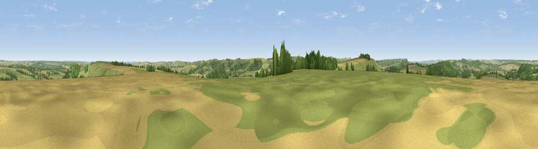

Swallowcliffe Down
#13020 in England · top 14% of its area beats it · near AnstyThe view, rendered

A 360° render of this exact spot computed from the terrain model, tree cover and land cover — summer colours, afternoon light, calibrated against photographs of famous viewpoints. Real trees, hedges and buildings will differ in detail.
The panorama
Grey silhouette: terrain skyline in each direction (720 bearings, Earth curvature and refraction included). Dashed green: skyline with trees (+15 m) and buildings (+8 m) as obstacles. Blue strip: how far the ground is visible on each bearing.
Where the view opens
Wedge length = distance to the farthest visible ground on that bearing (vegetation-aware). Rings at 10, 25 and 50 km.
What fills the view
45% grassland · 29% cropland · 26% woodland ·
Angular shares of the visible panorama (visual magnitude), not map area. Landscape diversity 0.48 (0–1 Shannon).
Key numbers
More beautiful places nearby
The staircase of upgrades: each row has a higher view potential than everything closer. Driving times are estimates from straight-line distance, calibrated against real road routing — check an actual route before setting out.
| Place | Direction | Drive | Score |
|---|---|---|---|
| Ansty Down | WSW · 2 km | ~5 min | 61.6 |
| Trow Down | S · 4 km | ~9 min | 67.5 |
| Monk's Down | SW · 6 km | ~12 min | 74.4 |
| Viewpoint near Berwick St John | SW · 6 km | ~13 min | 78.2 |
| Viewpoint near Kimmeridge | S · 44 km | ~64 min | 82.9 |
| Viewpoint near Kimmeridge | S · 44 km | ~64 min | 84.1 |
| Whiteway Hill | SSW · 45 km | ~66 min | 85.0 |
| Viewpoint near Kimmeridge | S · 46 km | ~66 min | 86.6 |
51.02868, -2.04812 · source: osm peak · position refined by local search. Computed location — check access rights before visiting.